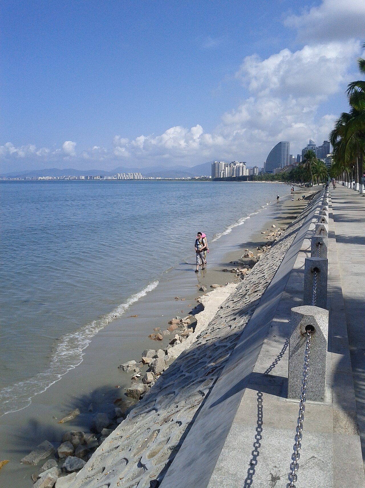

海南环岛自驾沿 G98 环岛高速与滨海旅游公路，串联海口、文昌、琼海、万宁、三亚、东方、儋州。冬季温暖如夏，是大陆车主避寒首选。新能源车在海南补能条件全国领先，适合纯电出行。
经典 5–7 日：海口—文昌（东郊椰林）—琼海（博鳌）—万宁（日月湾、石梅湾）—三亚—陵水—东方—儋州（海花岛）—海口。新开通的海南环岛旅游公路风景更优，可与高速组合。
11 月至次年 4 月为最佳，避开 5–10 月台风季。三亚、海棠湾消费较高，琼海、万宁性价比更好。注意海洋安全，勿在无人看管海域游泳。
Itinerary
分日行程
海口 → 文昌 → 琼海
东郊椰林看海防林带与椰风，博鳌亚洲论坛会址可外观。傍晚在博鳌或潭门渔港尝海鲜。
琼海 → 万宁
日月湾冲浪文化浓厚，石梅湾公路被誉为「最美滨海公路」之一。神州半岛灯塔适合日落。
万宁 → 三亚
经陵水可停南湾猴岛（遵守动物保护规定）。下午抵三亚，亚龙湾、大东海择一散步。
三亚休整
天涯海角、南山文化旅游区、蜈支洲岛（需乘船）可按兴趣选择。注意防晒与补水。
三亚 → 东方 → 儋州
西线相对安静，东方鱼鳞洲看日落。儋州海花岛人工岛夜景 controversial 但视觉震撼。
儋州 → 海口
经临高、澄迈返回海口，骑楼老街、火山口公园可选。完成环岛。
Photo Essay
沿途影像




Highlights
核心景点
东郊椰林
文昌标志性海岸，椰林与海滩交织。可尝椰子鸡与文昌鸡，感受海南东线起点。
日月湾
冲浪胜地，年轻氛围浓。即使不冲浪，看浪人与日落也是享受。
石梅湾
滨海旅游公路最上镜段之一，青皮林与碧海相映。适合慢开摇窗。
亚龙湾
三亚最成熟海湾，沙细水清。冬季仍适合戏水，周边度假设施完善。
骑楼老街
海口南洋骑楼建筑，海口城市记忆。适合最后一日 city walk 与美食收尾。
Route
途经站点
环岛起点
轮渡进岛或直飞取车。
东郊椰林
东线起点。
热带核心
至少留 1–2 天。
西线枢纽
海花岛可选。
环岛终点
约 900 公里一圈。
Practical
实用信息
- 台风季（5–10 月）关注气象，避免强风暴雨出行。
- 海水浴场选择有救生员的区域，遵守旗语警示。
- 海鲜购买与加工分开时问清价格，避免纠纷。
- 海南全年紫外线强，防晒、遮阳帽、墨镜必备。
- 轮渡进岛提前预订车票，旺季排队时间长。
EV Tips
新能源出行提示
驾驶腾势 N7 等纯电 SUV 出发前，请特别注意以下事项：
- 海南环岛快充网络全国领先，海口、三亚、琼海、万宁沿途补能便利，适合纯电环岛。
- 高温环境下注意电池散热，尽量选择阴凉停车位。
- 滨海公路风大，侧风路段适当降速以稳定续航。